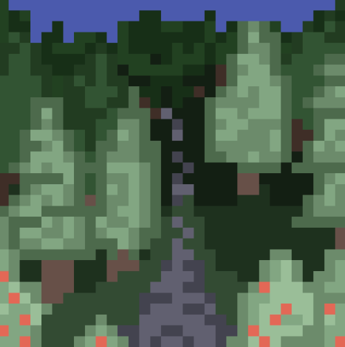

Despite how tired you are the adrenaline takes over. The forest with the small stone path has caught your attention, you couldnt wait until tomorrow to explore...
You dump your suitcase at your front door and head down the path. The late afternoon sun quickly fades and you find yourself in darkness only a few steps in. You hear a few snaps and creaks in the darkness but quickly come to the conclusion that it's general forest sounds, it'll just be a squirrel surely!
You continute to walk deeper into the forest telling yourself that this pathway HAS to lead somewhere. The deeper and darker the forest gets, the less visible the path becomes. Maybe you should turn back? You stop to debate whether you should keep going when you suddenly hear a... howl? Now you're intrigued...